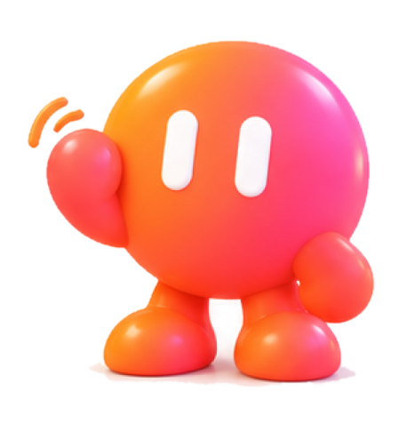

Основы ИИ
Если у вас на телефоне уже стоит DeepSeek, то вам сюда
Пройти квиз
Разбираем нейросети по шагам: от первого вопроса чат-боту до привычки, которая экономит часы.
Подписаться на рассылкуПройдите наши квизы и узнайте свой уровень познаний в нейросетях
Если у вас на телефоне уже стоит DeepSeek, то вам сюда
Пройти квизПлатная подписка, подключённые MCP-серверы — как далеко вы уйдёте?
Пройти квизНасколько вы знаете, на что ещё способны флагманские модели
Пройти квизСлова, которые звучат сложно, а означают простые вещи.
Полный глоссарий
Новый разбор, один полезный запрос и честные новости. Отписаться можно в один клик.
Готово! Первое письмо придёт в ближайший понедельник.
Не получилось отправить. Попробуйте ещё раз.